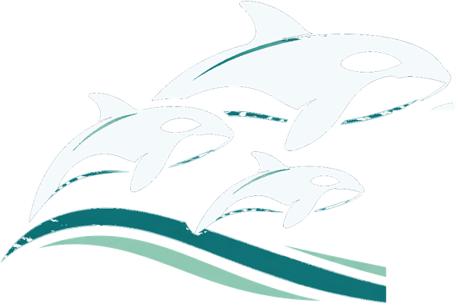

✦
Medicare Stars & Quality
Ratings methodology, HEDIS measures, performance trends, and improvement opportunities.
I bridge healthcare quality strategy and business intelligence—translating complex data into clear insights, actionable priorities, and stronger decision-making.

Star Ratings Command Center
Medicare Stars intelligence, market benchmarking, performance forecasting, and measure-level analytics.
Power BI portfolio project · In development
Combining technical depth with the ability to translate complex performance data into decisions that matter.
Ratings methodology, HEDIS measures, performance trends, and improvement opportunities.
Power BI dashboards, executive reporting, visual storytelling, and decision support.
SQL, SAS, quality control, supplemental data, vendor research, and complex analysis.
Cross-functional partnership, performance improvement, mentorship, and operational insight.
An interactive Power BI analytics experience designed to explore Medicare Advantage Star Ratings, market positioning, future projections, and measure-level improvement opportunities.
Orcinus Health is a fictional health plan built for portfolio demonstration purposes. Plan-specific source data is synthetic, while all CMS data is authentic and sourced directly from the Centers for Medicare & Medicaid Services (CMS).
Orcinus (or·suh·nuhs) is the genus name of the orca, a creature that has captivated me for as long as I can remember.
To me, orcas embody a remarkable balance of beauty and strength, grace and power. Beneath their striking appearance lies an extraordinary intelligence, matched by deep social bonds, intricate communication, and an enduring sense of family and community.
They are a reminder that true brilliance is not simply measured by what we know, but by how we connect, collaborate, and navigate the world around us.
Orcinus Health is my small tribute to a creature I've admired my entire life — and to the qualities I find most extraordinary about them.
Insights from colleagues and leaders I've had the opportunity to collaborate with throughout my career.
Approved professional recommendations will appear here.
Placeholder section. Quotes, headshots, names, and LinkedIn links will be added with each contributor’s permission.
My work sits at the intersection of healthcare analytics, quality improvement, and business strategy. I focus on making complex information useful—helping teams understand performance, identify opportunities, and take action.
Interested in connecting, collaborating, or learning more about my work? I'd love to hear from you.
↗ Connect on LinkedIn ✉ Send Me an Email ↓ Download My Résumé